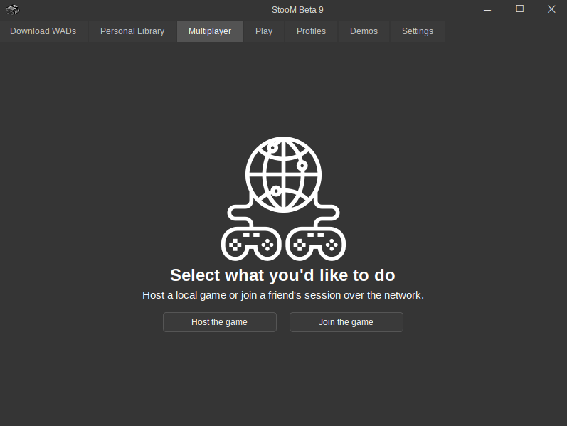
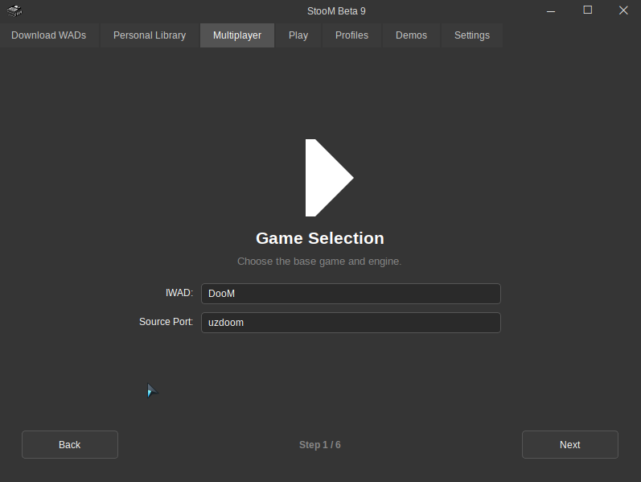
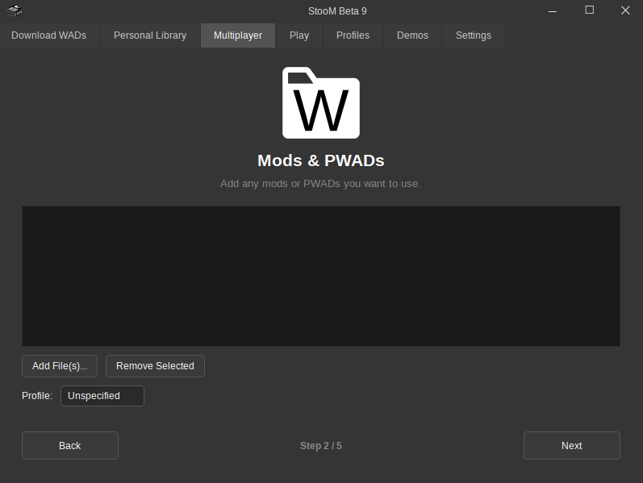
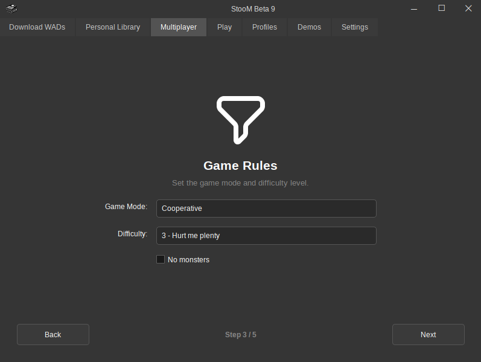
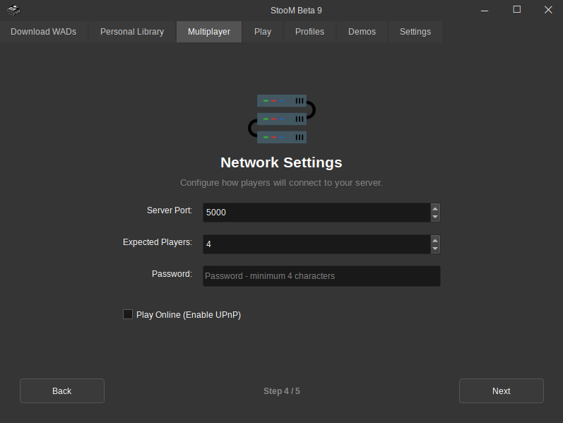
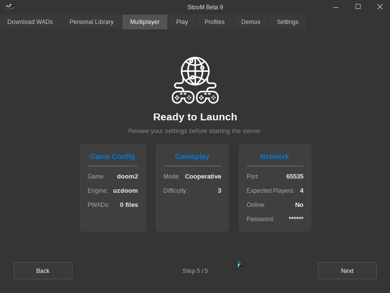
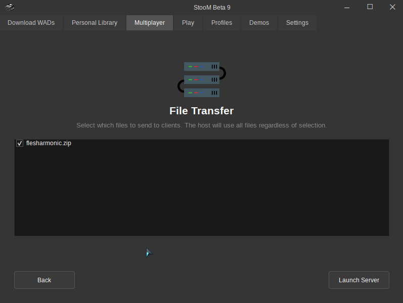
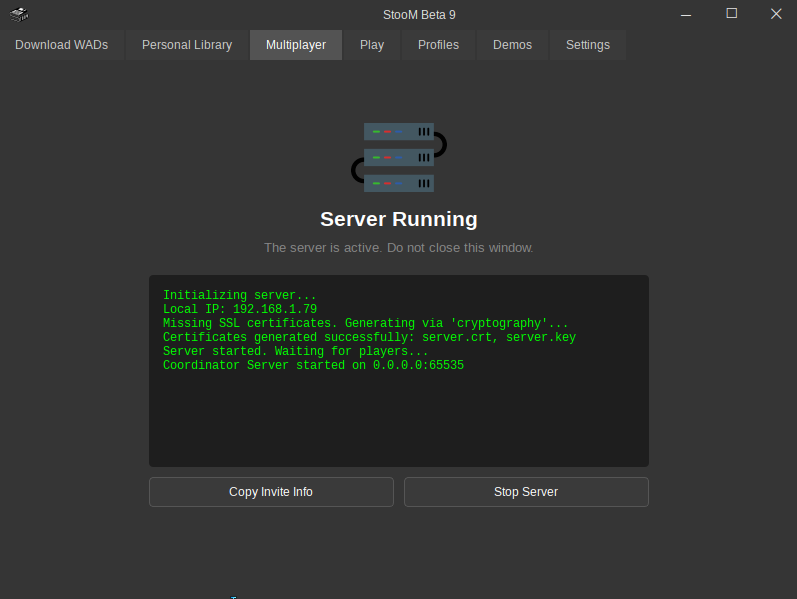

Host a Game
Follow these steps to host a multiplayer game and play with your friends.
Step 1: Open the Multiplayer Tab
First, navigate to the Multiplayer tab in the StooM application.
Step 2: Click "Host the Game"
Click on the "Host the Game" button to start the hosting setup.

Step 3: Select IWAD and Source Port
You will enter a setup wizard with a total of 6 pages. On the first page, select your IWAD and Source Port.
Note: Source ports and IWADs you do not own will not be displayed in the lists. Multiplayer supports three source ports: ZDoom, UZDoom, and GZDoom.

Step 4: Add PWADs and Mods
On this screen, you can add PWADs as well as mods. Depending on the source port and IWAD selected previously, you may also be able to select a profile.

Step 5: Choose Game Mode
On this screen, select the Game Mode (Cooperative or Deathmatch). You can also select the difficulty, and choose to remove all monsters.

Step 6: Configure Network Settings
On this screen, you will configure the most important settings:
- Port: You can choose between 1,023 and 65,535. If you don't know what this is, leave it at 5,000, it's a good default choice. :)
- Expected Players: You must count yourself in the total. If you are going to play with 3 friends, enter 4 (You + 3 friends).
- Password: The only requirement is a minimum of 4 characters. However, try to set a strong password.
- Online: You can also decide to play online by checking the corresponding box.

Step 7: Review the Summary
On this screen, you will see a complete summary of your game configuration:
- IWAD
- Source Port
- Number of PWADs
- Game Mode
- Difficulty
- Port
- Expected Players
- Online status
- Password (the number of asterisks is not representative of the password length!)

Step 8: Select Files to Send
On this screen, select the files that will be sent to the clients:
For example, if you play with a sound pack, your friends may not want to download it :p In that case, uncheck the corresponding box.

Step 9: Wait for Players
The next screen shows the Coordinator Server logs, which manages:
- Sending files to clients (mods, PWADs, profiles)
- The command it must launch
You can copy the invitation information — this contains the IP, port, and password. Be careful who you give this information to, as the IP will be your public IP!
The Coordinator Server will manage connections and launch the game. StooM takes care of everything! At this stage, you just have to wait for the players to join.
